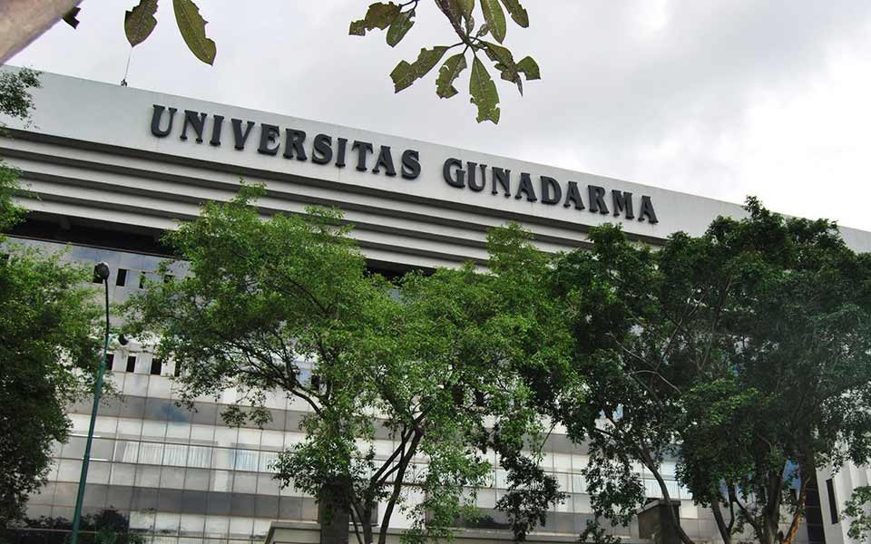
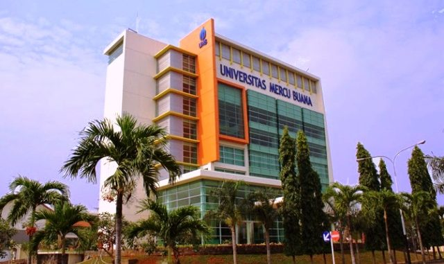
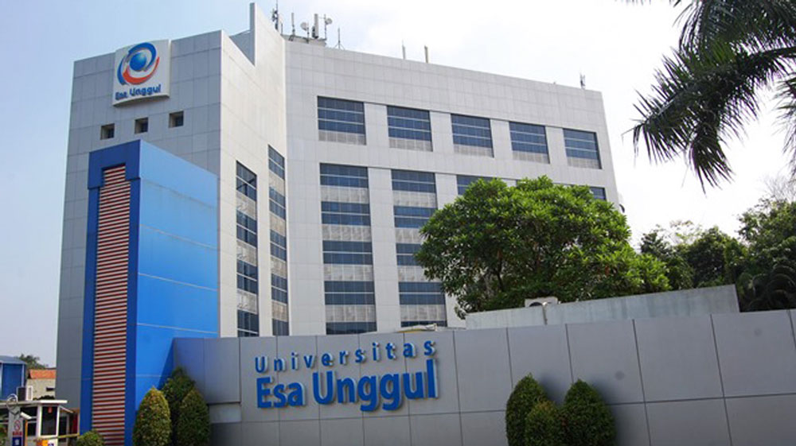
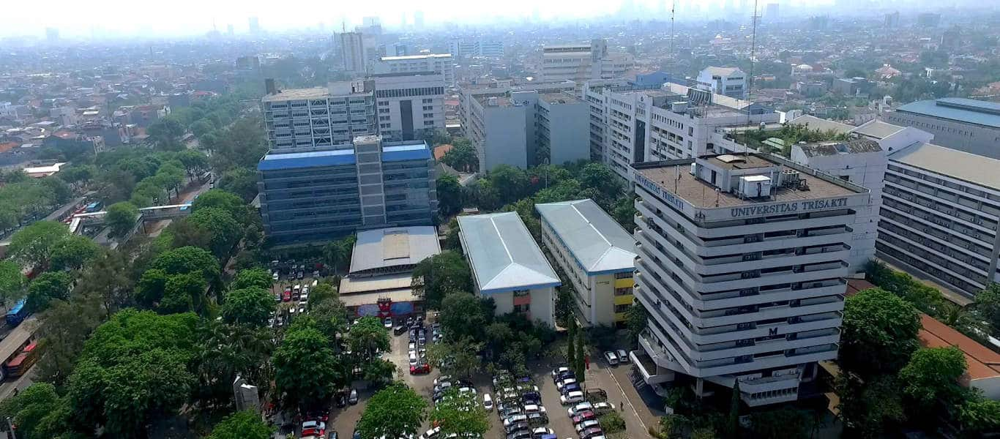
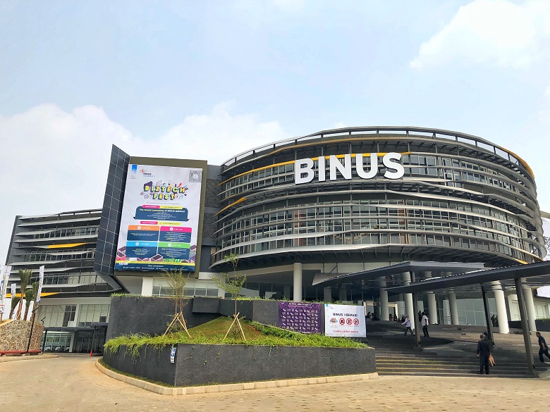
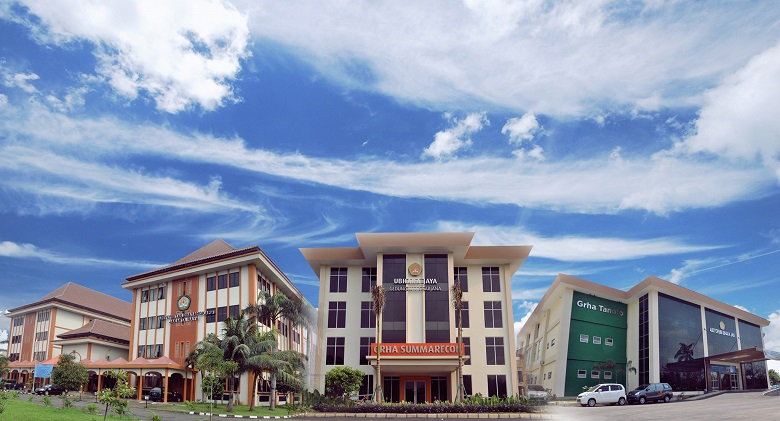
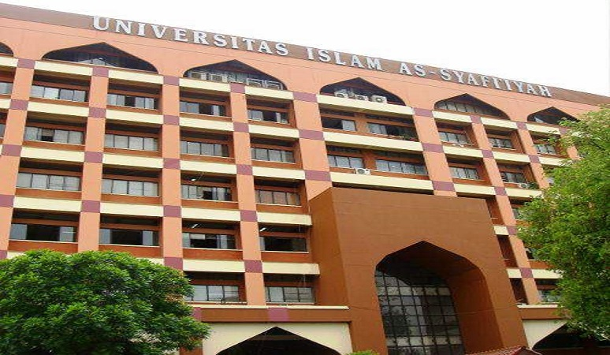
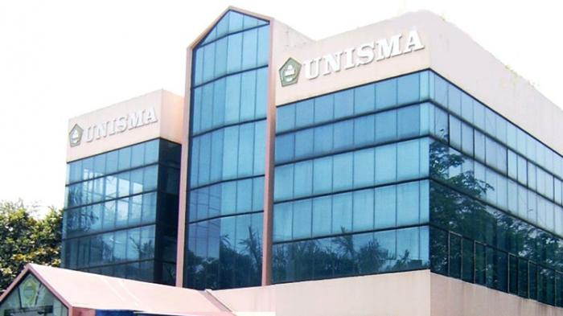

8 informasi mengenai Universitas terbaik yang ada di Bekasi bebrapa kampus yang terakreditas
Website by Firzan

Universitas Gunadarma
Universitas Gunadarma merupakan Perguruan Tinggi Swasta (PTS) berdiri pada tanggal 3 April 1996. Universitas yang dikenal dengan sebutan Gundar ini merupakan salah satu universitas swasta berbasis teknologi dan komunikasi yang
mengacu pada tata kelola good university governance.
Universitas Gunadarma
Pada 7 Agustus 1981 berdiri Program Pendidikan Ilmu Komputer (PPIK) di Jakarta yang tiga tahun kemudian berubah menjadi Sekolah Tinggi Manajemen Informatika dan Komputer (STMIK) Gunadarma. Enam tahun kemudian, tepatnya pada 13
Januari 1990, berdiri Sekolah Tinggi Ilmu Ekonomi Gunadarma (STIE Gunadarma).Pada tahun 1993, STMIK dan STIE membuka Program Magister dengan konsentrasi Manajemen Sistem Informasi untuk STMIK serta Magister Manajemen untuk STIE.
Selanjutnya, melalui S.K. Dirjen DIKTI No.92/Kep/Dikti/1996 tertanggal 3 April 1996, STMIK dan STIE Gunadarma melebur menjadi UNIVERSITAS GUNADARMA bersama dengan empat fakultas baru yaitu Fakultas Teknologi Industri, Fakultas
Teknik Sipil dan Perencanaan, Fakultas Psikologi, dan Fakultas Sastra. Membuka milenium baru, Universitas Gunadarma membuka Program Doktor Ilmu Ekonomi berdasarkan ijin Dirjen Dikti Departemen Pendidikan Republik Indonesia No.
55/DIKTI/2000 yang diikuti dengan pembukaan Program Doktor Teknologi Informasi berdasarkan ijin Dirjen Dikti Departemen Pendidikan Republik Indonesia No. 3716/P/T/2002. Setelah melalui perjuangan panjang dalam menghadapi
berbagai tantangan, Universitas Gunadama telah menjelma menjadi salah satu perguruan tinggi swasta yang berbasis teknologi informasi dan komunikasi terkemuka di Indonesia. Pengalaman selama 25 tahun yang diiringi pengabdian dan
dedikasi tenaga pengajar; komitmen yayasan dan pimpinan; pengadaan fasilitas pembelajaran serta kepercayaan masyarakat, Universitas Gunadarma terus berupaya menghasilkan lulusan yang berguna dan bisa mendarmabaktikan
kompetensinya demi membangun masa depan bangsa yang lebih baik. Beberapa tonggak historis Universitas Gunadarma dalam kurun waktu seperempat abad disajikan dalam Tabel Tonggak Historis Universitas Gunadarma

Universitas Mercu Buana
Universitas Mercu Buana adalah Perguruan Tinggi Swasta yang menyelenggarakan Tridharma Perguruan Tinggi yaitu pendidikan, penelitian, dan pengabdian kepada masyarakat, didirikan di Jakarta pada tahun 1985 di bawah pembinaan
Yayasan Menara Bhakti. Universitas Mercu Buana bernaung pada Lembaga Layanan Pendidikan Tinggi (LLDIKTI) Wilayah III Kementerian Riset Teknologi Dan Pendidikan Tinggi (KEMRISTEKDIKTI) Republik Indonesia.
Universitas Mercu Buana
Pengusaha H. Probosutedjo (almarhum) yang mempunyai pengalaman sebagai guru di Perguruan Taman Siswa, Pematang Siantar, Sumatera Utara, pada tanggal 10 Nopember 1981 mendirikan Akademi Wiraswasta Dewantara (AWD). Peresmiannya
dilakukan oleh almarhum Bapak H. Adam Malik, Wakil Presiden RI saat itu. Dewantara diambil dari nama tokoh Pendidikan Nasional, yaitu Ki Hajar Dewantara. Misi pendidikan akademi ini antara lain adalah mengembangkan model
pendidikan untuk melahirkan pengusaha Pancasilais, dan kader-kader pembangunan yang mandiri serta mampu menciptakan kesempatan kerja. Sebelum memiliki kampus sendiri, penyelenggaraan perkuliahan dilaksanakan di Gedung Yayasan
Tenaga Kerja Indonesia (YTKI) Jl. Gatot Soebroto. Tahun 1984, Yayasan Menara Bhakti berhasil membangun kampus yang diberi nama Kampus Menara Bhakti yang berlokasi di Jl. Raya Meruya Selatan, Kembangan, Jakarta Barat. Pada tahun
1985, berbekal kemampuan dan pengalaman dalam menyelenggarakan pendidikan Akademi Wiraswasta Dewantara, timbul gagasan mendirikan lembaga pendidikan tingkat universitas. Dengan Surat Keputusan KetuaYayasan Menara Bhakti nomor
04/SKEP/KET/VI/1985 tanggal 12 Juni 1985, dibentuk Panitia Pendirian Universitas, dengan Ketua Dr. Sri Edi Swasono dan dibantu oleh H. Abdul Madjid (almarhum), Drs. Iman Santosa Sukardi (almarhum), Drs. M. Enoch Markum, Ir.
Suharyadi, M.S.,Soekarno dan Prijo S. Parwoto (almarhum). Setelah melalui persiapan pendirian dan studi kelayakan, dengan surat nomor 010/KET/YMB/VI/85 tanggal 12 Juni 1985, yayasan mengajukan permohonan izin mendirikan
Universitas Mercu Buana (UMB) kepada Kopertis Wilayah III. Berdasarkan surat nomor/ 15/ KOP.III/S.VI/85 yang ditandatangani oleh Prof. Dr. Boesjra Zahir (almarhum), pada tanggal 18 Juni 1985, Kopertis Wilayah III menyetujui dan
memberikan izin "Operasional" penyelenggaraan Universitas Mercu Buana.

Universitas Esa Unggul
Universitas Esa Unggul (UEU) didirikan pada tahun 1993 di bawah naungan Yayasan Pendidikan Kemala Bangsa adalah Perguruan Tinggi Swasta terkemuka dan menjadi salah satu Universitas Swasta terbaik di Indonesia.
Universitas Esa Unggul
Universitas Indonusa Esa Unggul (Nomor: 107/D/0/1993) didirikan pada tahun 1993 di bawah naungan Yayasan Pendidikan Kemala Bangsa. Kemudian pada tahun 2014 berganti nama menjadi Universitas Esa Unggul (Nomor: 57/E/O/2014).
Universitas Esa Unggul (UEU) adalah Perguruan Tinggi Swasta terkemuka dan menjadi salah satu Universitas Swasta terbaik di Indonesia yang memiliki VISI, yaitu Menjadi perguruan tinggi kelas dunia berbasis intelektualitas,
kreatifitas dan kewirausahaan yang unggul dalam mutu pengelolaan (proses) dan hasil (output) kegiatan Tri Dharma Perguruan Tinggi. Dan memiliki MISI: Menyelenggarakan pendidikan yang bermutu dan relevan, Menciptakan suasana
akademik yang kondusif, Menciptakan pemimpin yang berkarakter dan berdaya saing tinggi. Dalam satu dekade terakhir ini UEU mengalami perkembangan yang sangat pesat menjadi salah satu Perguruan Tinggi Swasta (PTS) terkemuka di
Jakarta. Sejarah mencatat bahwa UEU adalah Perguruan Tinggi yang merintis dan mempelopori pendirian Akademi Rekam Medik (ARM) dan Program Sarjana Terapan Fisioterapi yang pertama di Indonesia. Program peningkatan kualitas
akademik mahasiswa dan dosen, pelayanan, sarana dan prasarana, penelitian dan pengabdian masyarakat serta kualitas lulusan menjadi prioritas utama untuk mencapai a World Class University. Namun, tantangan lingkungan strategik
juga menuntut UEU untuk selalu melakukan penyesuaian dan inovasi pada nilai-nilai, budaya kerja dan etos kerjanya menjadi perguruan tinggi kelas dunia, berarti UEU bertekad untuk mengacu pada standar perguruan tinggi kelas dunia
dan menjalankan best practices yang dilakukan oleh perguruan tinggi kelas dunia. UEU berupaya menghasilkan output, baik hasil penelitian maupun hasil pengabdian masyarakat, yang diakui kontribusinya oleh komunitas internasional.
Dan yang paling penting UEU berupaya keras untuk menghasilkan lulusan yang mempunyai kompetensi dan berdaya saing global. Kewirausahaan dan kreatifitas, yang secara eksplisit telah dijadikan spirit dan tema utama akan mewarnai
seluruh perjalanan kemajuan UEU sampai dengan tahun – tahun berikutnya. UEU dikenal bukan hanya menghasilkan pemikir cerdas dan kritis, namun juga menghasilkan lulusan yang inovatif dan mampu menciptakan lapangan pekerjaan. UEU
mengembangkan dan menjalin kerjasama dengan berbagai pihak baik institusi nasional maupun internasional dengan Universitas dan Program Studi untuk meningkatkan kualitas pembelajaran, kurikulum, dan mutu lulusan UEU, sehingga
memiliki ketrampilan dan kompetensi terbaik sesuai dengan bidangnya. Lokasi UEU memiliki 4 Kampus yang berada di daerah yang strategis yaitu satu di Jakarta, dua di Tangerang yaitu Citra Raya dan Serpong, satu lagi di Bekasi dan
Kampus utama berada di Jakarta Barat. Kampus yang berlokasi di sisi Tol Tomang – Kebon Jeruk mudah dicapai dari seluruh penjuru Jakarta, Tangerang, Bekasi, Bogor dan sekitarnya. Dengan areal kampus hijau seluas 4,5 ha di jantung
kota Jakarta, UEU terus berkembang sebagai “Urban Campus” yang menjadi kebanggaan masyarakat.

Universitas Trisakti
Universitas Trisakti merupakan satu-satunya perguruan tinggi swasta di Indonesia yang didirikan oleh Pemerintah Republik Indonesia pada tanggal 29 November 1965 melalui Surat Keputusan Menteri Perguruan Tinggi dan Ilmu Pengetahuan
(PTIP) Nomor 014/dar tahun 1965, yang ditandatangani oleh Dr. Sjarif Thajeb. Tanggal 29 November ini kemudian ditetapkan sebagai hari kelahiran Universitas Trisakti.
Universitas Trisakti
Universitas Trisakti merupakan satu-satunya perguruan tinggi swasta di Indonesia yang didirikan oleh Pemerintah Republik Indonesia pada tanggal 29 November 1965 melalui Surat Keputusan Menteri Perguruan Tinggi dan Ilmu
Pengetahuan (PTIP) Nomor 014/dar tahun 1965, yang ditandatangani oleh Dr. Sjarif Thajeb. Tanggal 29 November ini kemudian ditetapkan sebagai hari kelahiran Universitas Trisakti. Proses kelahiran Universitas Trisakti diawali
dengan dihancurkannya Universitas Respublika oleh masa pada Tahun 1965 karena dianggap terlibat dalam pergerakan Partai Komunis Indonesia pada bulan September 1965. Dari puing – puing Respublika itulah, maka dibangun Universitas
Trisakti. Nama Universitas Trisakti diberikan oleh Dr. Ir. Soekarno, Presiden Republik Indonesia pada waktu itu. Makna Trisakti diambil dari pidato Dr. Ir. Soekarno, yaitu berdaulat di bidang politik, berdikari di bidang ekonomi
dan berkepribadian dalam kebudayaan. Landasan inilah yang menjadi tonggak upaya Universitas Trisakti untuk ikut mencerdaskan anak bangsa dalam berbagai aspek, baik kecerdasan intelektual, emosional, spiritual dan kepekaan sosial
terhadap sesama, serta kepedulian dalam menjaga lingkungan hidup. Pada awal didirikan Universitas Trisakti memiliki lima fakultas, yaitu Fakultas Hukum, Fakultas Ekonomi, Fakultas Kedokteran, Fakultas Kedokteran Gigi dan
Fakultas Teknik yang memiliki 4 (empat) departemen yaitu Departemen Teknik Sipil, Teknik Mesin, Teknik Elektro dan Arsitektur. Saat ini, Universitas Trisakti telah memiliki 9 (sembilan) fakultas yaitu Fakultas Hukum, Fakultas
Ekonomi, Fakultas Kedokteran, Fakultas Kedokteran Gigi, Fakultas Teknik Sipil dan Perencanaan, Fakultas Teknologi Industri, Fakultas Teknologi Kebumian dan Energi, Fakultas Arsitektur Lansekap dan Teknik Lingkungan, serta
Fakultas Seni Rupa dan Desain, dengan jumlah 23 (dua puluh tiga) Program Sarjana, 1 (satu) Program Diploma IV dan 4 (empat) Program Diploma III. Selain itu terdapat Program Pascasarjana yang memiliki 14 (empat belas) Program
Magister dan 5 (lima) Program Doktor. Dalam perjalanannya, Universitas Trisakti mengalami berbagai macam peristiwa, salah satunya yang sangat monumental adalah peristiwa Tragedi 12 Mei 1998 yang mengakibatkan gugurnya 4 (empat)
mahasiswa Universitas Trisakti. Gugurnya ke empat mahasiswa ini telah menjadi pemicu pergerakan mahasiswa Indonesia dalam menumbangkan Orde Baru dan dipandang sebagai awal kebangkitan Era Reformasi Indonesia. Peristiwa ini
sangat monumental karena meruntuhkan pemerintahan Orde Baru yang telah memegang kekuasaan di negara ini selama lebih dari 32 tahun. Sejak itu Universitas Trisakti dikenal sebagai Kampus Pahlawan Reformasi dan bertekad terus
berdiri di depan untuk senantiasa mengibarkan panji-panji reformasi dengan idealisme Kadeham (Kebangsaan, Demokrasi dan Hak-Hak Asasi Manusia). Setelah 7 (tujuh) tahun peristiwa itu berlalu, akhirnya pada tahun 2005 Pemerintah
Republik Indonesia melalui Presiden Susilo Bambang Yudhoyono menganugerahi penghargaan Bintang Jasa Pratama, dengan Kepres RI No 057/TK/2005 tertanggal 9 Agustus 2005 kepada keempat mahasiswa yang gugur sebagai Pejuang Reformasi
untuk menuju kehidupan yang demokratis.

Universitas Bina Nusantara
Universitas Bina Nusantara merupakan Perguruan Tinggi Swasta (PTS) berdiri pada tanggal 8 Agustus 1996. Universitas yang dikenal dengan sebutan Binus ini merupakan salah satu universitas swasta berbasis teknologi dan komunikasi
yang mengacu pada tata kelola good university governance.
Universitas Bina Nusantara
Universitas Bina Nusantara pada awalnya berasal dari sebuah institusi pelatihan komputer Modern Computer Course yang didirikan pada 21 Oktober 1974.[1][2] Seiring dengan perkembangan, Modern Computer Course kemudian berkembang
menjadi Akademi Teknik Komputer (ATK) pada 1 Juli 1981. Akademi ini menawarkan pendidikan manajemen informatika dan teknik informatika. Tiga tahun kemudian pada 13 Juli 1984 ATK mendapatkan status terdaftar dan berubah menjadi
AMIK Jakarta.[3] Pada 1 Juli 1985, AMIK membuka kursus di bidang komputerisasi akuntansi. AMIK mulai menggunakan nama Bina Nusantara pada 21 September 1985. AMIK mendapatkan penghargaan akademi komputer terbaik dari Menteri
Pendidikan dan Kebudayaan pada 17 Maret 1986. AMIK Bina Nusantara kemudian membentuk STMIK (Sekolah Tinggi Manajemen Informatika dan Komputer) Bina Nusantara pada 1 Juli 1986. Institusi ini kemudian menawarkan program studi
sarjana (S1) di bidang manajemen informatika dan teknik informatika. Pada 9 November 1987 AMIK Bina Nusantara bergabung dengan STMIK Bina Nusantara membentuk satu institusi pendidikan yang menawarkan program studi diploma (D3)
dan strata 1 (S1). STMIK Bina Nusantara memperoleh status disamakan untuk semua program studi pada 18 Maret 1992. STMIK Bina Nusantara kemudian membuka program studi pascasarjana manajemen sistem informasi, pertama di Indonesia
pada 10 Mei 1993. Universitas Bina Nusantara kemudian didirikan pada 8 Agustus 1996.[2] STMIK Bina Nusantara kemudian bergabung dengan Universitas Bina Nusantara pada 20 Desember 1998. Saat ini, Universitas Bina Nusantara
memiliki program pendidikan: Sekolah Sistem Informasi, Sekolah Teknik Informatika, Fakultas Teknik, Sekolah Bisnis dan Manajemen, Fakultas Ekonomi dan Komunikasi, Sekolah Desain, Fakultas Humaniora, Magister Teknik Informatika,
Magister Manajemen Sistem Informasi, Magister Manajemen (Sekolah Bisnis), dan Doktor Riset Manajemen. Pada 23 Oktober 2014, Universitas Binus meluncurkan kampus terbarunya dengan mengadakan grand launching Binus University di
Alam Sutera, Serpong, Tangerang.[4] Kampus baru ini berupa gedung 22 lantai dan menerapkan konsep green campus, bangunan yang ramah lingkungan dengan pemakaian fasilitas-fasilitas hemat energi.[5] Kampus seluas 25 ribu meter
persegi tersebut didesain oleh arsitek Indonesia, yaitu Budiman. Kampus Alam Sutera memiliki empat program studi utama. Keempatnya adalah computer science, school of design, school business and management, serta information
system. Pada 29 April 2015, Binus dan PT Summarecon Agung Tbk. melakukan penandatanganan perjanjian pembangunan Kampus baru di Summarecon Bekasi. Kampus ini direncanakan akan dibangun diatas lahan seluas 36.400 m2 di Jalan
Lingkar Bulevar Kota Summarecon Bekasi. Untuk tahap awal, pada Maret 2016 Binus akan membuka fasilitas perkuliahan online learning: Binus University Learning Community (BULC) di Kota Summarecon Bekasi, dan pada tahap selanjutnya
kampus Binus University beroperasi secara penuh pada tahun 2018.[6]

Universitas Bhayangkara
Universitas Bhayangkara Jakarta Raya (Ubhara Jaya) sebagai salah satu Perguruan Tinggi Swasta yang berada dibawah pembinaan Yayasan Brata Bhakti sebagai badan penyelenggaranya, berkewajiban mewujudkan tujuan pendidikan nasional
dengan Visi dan Misi nya bagi mendukung keberhasilan tugas Kepolisian Negara Republik Indonesia khususnya dan pengembangan kualitas hidup bermasyarakat berbangsa dan benegara pada umumnya.
Universitas Bhayangkara
Gagasan pertama untuk membentuk suatu Badan yang akan mengurusi kesejahteraan anggota Polri, dicetuskan oleh Almarhum Bapak RS. Soekanto Tjokrodiatmodjo, Kepala Kepolisian Republik Indonesia yang pertama, yang selanjutnya
ditinjak lanjuti oleh Almarhum Bapak Sosro Danoekoesoemo. Salah satu pertimbangan yang cukup mendasar adalah bahwa pengabdian kepada Negara dan Bangsa perlu diimbangi dengan kesejahteraan keluarga yang memadai. Pada rapat PBP3RI
(Pengurus Besar Persatuan Pegawai Polisi Republik Indonesia) pada medio tahun 1951 yang dipimpin oleh Bapak R. Memet Tanumidjaja, SH. Gagasan tersebut lebih dikongkritisasikan lagi, sehingga pada tanggal 21 Januari 1952
didirikan Badan Kesejahteraan Sosial Pusat Kepolisian Indonesia dengan Akte Notaris RM. Soerojo Nomor 122. Momentum tanggal 21 Januari tersebut, selanjutnya ditetapkan sebagai hari jadi Yayasan Brata Bhakti. Berdasarkan
Instruksi Menhankam/Pangab Nomor: INST/B/17/III/1970 tanggal 23 Maret 1970, tentang perintah untuk menginventarisir Yayasan-yayasan kesejahteraan yang ada dilingkungan ABRI, maka didirikanlah Yayasan Kepolisian Brata Bhakti,
berdasarkan Akte Notaris Soeleman Ardja Sasmita, SH. Nomor 17 tanggal 9 Desember 1972. Kapolri selaku Ketua Umum Yayasan Brata Bhakti mengeluarkan Keputusan No. Pol. : Kep/05/IX/1995/YBB untuk mendirikan Universitas Bhayangkara
Jakarta Raya (Ubhara Jaya).

Universitas Islam As-Syafi’iyah
Universitas Islam As-Syafi’iyah adalah perkembangan dari Akademi Pendidikan Islam (AKPI) As-Syafi’iyah yang didirikan pada tanggal 14 November 1965, dan pada tanggal 12 Maret 1969 AKPI tersebut ditingkatkan menjadi Universitas.
Perintisan dan kepedulian itu dimulai sejak tahun 1928 di mana pada usia 18 tahun, Abdullah Syafi’ie muda mulai membuka madrasah dengan modal sebidang tanah dari ayahandanya. Madrasah itu berkembang dengan nama “Al-Islamiyah”
menjadi “Perguruan As-Syafi`iyah”.
Universitas As-Syafi`iyah
Universitas Islam As-Syafi’iyah adalah perkembangan dari Akademi Pendidikan Islam (AKPI) As-Syafi’iyah yang didirikan pada tanggal 14 November 1965, dan pada tanggal 12 Maret 1969 AKPI tersebut ditingkatkan menjadi Universitas.
Perintisan dan kepedulian itu dimulai sejak tahun 1928 di mana pada usia 18 tahun, Abdullah Syafi’ie muda mulai membuka madrasah dengan modal sebidang tanah dari ayahandanya. Madrasah itu berkembang dengan nama “Al-Islamiyah”
menjadi “Perguruan As-Syafi’iyah”. Perguruan As-Syafi’iyah berkembang dan mendapat tempat di hati ummat karena berhasil memadukan antara bentuk tradisi kependidikan Islam yang konvensional dan pendidikan formal dengan standard
sekolah pemerintah sampai kepada tingkat menengah. Oleh keberhasilan itu kemudian K.H. Abdullah Syafi’ie merasa tertuntut untuk memikirkan dan mewujudkan pengembangan pendidikan formal pada jenjang yang lebih tinggi. Keberadaan
AKPI As-Syafi’iyah pada awalnya didorong oleh dua hal. Pertama, hasrat untuk meningkatkan kualifikasi ilmiah para guru agama lulusan madrasah dan pesantren. Kedua, hasrat untuk mendidik cendekiawan agama yang memiliki integritas
ilmiah dalam disiplin ilmu yang dipilihnya. Untuk mewujudkan hasrat itu K.H. Abdullah Syafi’ie mengumpulkan kawan-kawannya yang dinilai mampu mendukung terwujudnya Perguruan Tinggi yang akhirnya melahirkan kesepakatan mendirikan
Yayasan Pendidikan Islam As-Syafi’iyah yang diharapkan akan mengelola Perguruan Tinggi tersebut. Semula AKPI As-Syafi’iyah akan diresmikan pada tanggal 1 Oktober 1965 dengan Kuliah Perdana oleh Jenderal Dr. H. Abdul Haris
Nasution. Namun, Jenderal A.H. Nasution cedera dalam peristiwa G.30 S/PKI. Maka kuliah perdana tidak dapat berlangsung. Akhirnya kuliah perdana diganti oleh Dr. Muhammad Hatta, salah seorang Proklamator Negara Republik
Indonesia, yang dilaksanakan setelah salat Jumat di Masjid Al-Barkah dalam kompleks As-Syafi’iyah, pada tanggal 14 November 1965. Dalam perkembangannya, perkuliahan AKPI banyak terganggu oleh aktivitas mahasiswa berdemonstrasi.
Namun demikian eksistensi AKPI yang baru lahir itu dapat dipertahankan dan dijaga. Para dosen yang terlibat dalam perkuliahan antara lain K.H. Abdullah Syafi’ie, H. Abdullah Salim, K.H. Ali Assegaf, Syekh As-Sumbati Al-Mishri
(Dosen Al-Azhar University yang diperbantukan), Drs. Abdul Salam Djaelani dan Drs. Nurulhuda yang bertindak sebagai pengelola. Mahasiswa pertama yang terdaftar sebanyak 260 orang. Sebagian besar terdiri dari guru-guru agama dan
pemuda-pemuda Islam lulusan madrasah dan pesantren yang tidak mempunyai ijazah formal. Pada tanggal 12 Maret 1968 didirikan Radio Dakwah yang bernama Radio AKPI As-Syafi’iyah (kini bernama Radio As-Syafi’iyah), yang kegiatannya
banyak diisi oleh mahasiswa. Radio ini selain berfungsi sebagai media latihan bagi Mahasiswa, dalam meningkatkan ketrampilan dakwah, juga untuk mengumandangkan semangat perjuangan menegakkan keadilan kebenaran.

Universitas Islam 45
Berdiri sejak tahun 1982 dan memiliki wilayah seluas 10 hektar menjadikan Universitas Islam 45 (UNISMA) Bekasi sebagai universitas pertama dan terbesar di Kota Bekasi. Sebagai lembaga yang menjamin standar mutu pendidikan, UNISMA
Bekasi telah terakreditasi oleh Badan Akreditasi Nasional Perguruan Tinggi (BAN-PT). UNISMA Bekasi lahir dari semangat pembangunan Kota Bekasi di Bidang Pendidikan. Pada tahun 1982 Bupati Bekasi saat itu sekaligus Ketua Yayasan
Pendidikan Islam (YPI) “45” Bekasi, H. Abdul Fatah, mendirikan Akademi Pembangunan Desa (APD) sebagai lembaga pendidikan masyarakat Bekasi.
Universitas Islam 45
Universitas Islam 45 Bekasi (disingkat UNISMA ) adalah sebuah universitas swasta yang terletak di Kota Bekasi, Jawa Barat. Universitas ini berada di bawah naungan Yayasan Pendidikan Islam (YPI) "45". [1] Cikal perguruan tinggi ini
berasal dari Akademi Pembangunan Desa (APD) Bekasi yang didirikan tanggal 17 April 1982 oleh Bupati Bekasi saat itu, sekaligus Ketua Yayasan Pendidikan Islam “45” Bekasi, H. Abdul Fatah, yang mulanya bertempat di Gedung Juang 45
Bekasi.[2] APD kemudian berubah menjadi Akademi Administrasi Pembangunan (APP) dan pada tahun 1985 menjadi Sekolah Tinggi Ilmu Sosial dan Ilmu Politik (STISIP). Tahun 1986, berdiri Sekolah Tinggi Keguruan dan Ilmu Pendidikan
(STKIP), Sekolah Tinggi Ilmu Ekonomi (STIE), dan Sekolah Tinggi Ilmu Pertanian (STIPER). Tahun 1987, berdasarkan SK Mendikbud No.0483/O/1987 bergabunglah STISIP, STKIP, STIE, dan STIPER menjadi Universitas Islam "45". Tahun 1988
bergabung Sekolah Tinggi Agama (STIA) berdasarkan SK Menteri Agama No.219/1988.[3] Dengan slogan "Preparing for the Future" UNISMA Bekasi memiliki visi menghasilkan insan Khairu Ummah bagi masyarakat, sehingga sarjana UNISMA
Bekasi tak hanya mumpuni di bidang Ilmu Pengetahuan dan Teknologi (IPTEK), namun juga disertai dengan akhlakul karimah. [4]